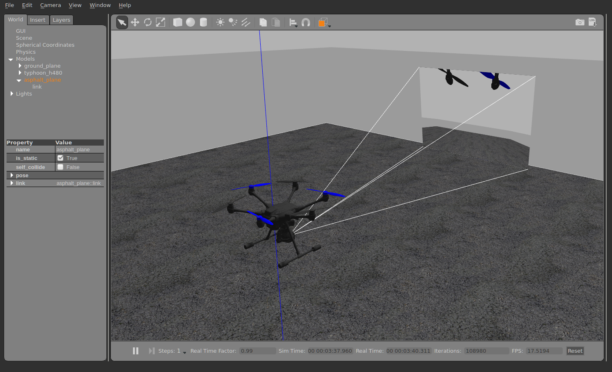

云台控制设置
如果你想要去控制一个装在飞机上带相机的云台（或者是其他的挂载设备），你需要配置使用什么去控制它和 PX4 怎样才能命令它。 本页内容就是讲解这些设置。
PX4 包含了一个通用的挂载设备/云台的控制驱动，它含有多种输入输出方式。 输入就是你使用什么去控制云台：通过遥控器或者 MAVLink 命令（例如处在任务模式或者搜索模式时）。 输出就是云台怎样与飞机连接的：一些云台支持 MAVLink 命令， 其他则可以通过 PWM 连接（下文定义为AUX输出）。 可以选择任何的输入方式去驱动任何的输出。 两种方式都需要通过参数配置。
参数
这些参数 被用于配置挂载设备的驱动。 其中最重要的是输入模式 (MNT_MODE_IN) 和输出模式 (MNT_MODE_OUT) 。 默认情况下，输入是没有被使能的，所以这个驱动没有运行。 选择了输入模式之后，重启飞机便可以使设备驱动开始工作。
如果输入模式设置为 AUTO，则模式将根据最新输入进行自动切换。 如果需要从 MAVLink 切换为 RC 输入，则需要一个较大的杆量。
AUX 输出
如果输出模式设置为AUX，需要定义混控器文件去重新映射输出引脚，挂载混控器会被自动选择（机型配置文件提供了覆盖任何一款的 AUX 混控器）。
输出分配如下所示:
- AUX1: Pitch
- AUX2: Roll
- AUX3: Yaw
- AUX4: Shutter/retract
自定义混控器配置
阅读 混控与执行器 去理解混控器的工作方式与混控器文件的格式。
输出能够使用在 SD 卡上 创建一个混控器文件 进行配置。文件名字为etc/mixers/mount.aux.mix。
下面举例的是挂载设备的基本混控器配置：
# roll
M: 1
O: 10000 10000 0 -10000 10000
S: 2 0 10000 10000 0 -10000 10000
# pitch
M: 1
O: 10000 10000 0 -10000 10000
S: 2 1 10000 10000 0 -10000 10000
# yaw
M: 1
O: 10000 10000 0 -10000 10000
S: 2 2 10000 10000 0 -10000 10000
软件在环仿真（ SITL ）
台风 H480 的模型带有一个预先配置的仿真云台。 若要运行它，请使用：
make px4_sitl gazebo_typhoon_h480
为了能够在其他模型或者仿真器件下测试挂载驱动，请使用 vmount start 去确保驱动正在运行。然后再配置它的参数。
测试
驱动程序提供了一个简单的测试指令。首先它需要使用 </code>vmount stop</0> 指令来停止。 接下来描述了在SITL中的测试方式，但是这些指令也可以在真实的设备中使用。
使用下面这条指令开始仿真（不需要修改任何参数）：
make px4_sitl gazebo_typhoon_h480
先确保飞机已经解锁，例如 输入 commander takeoff。 然后使用下面的指令作为例子控制云台。
vmount test yaw 30
请注意， 仿真的云台会自行稳定。因此，如果发送 MAVLink 命令，请将 stabilize 标志设置为 false。
